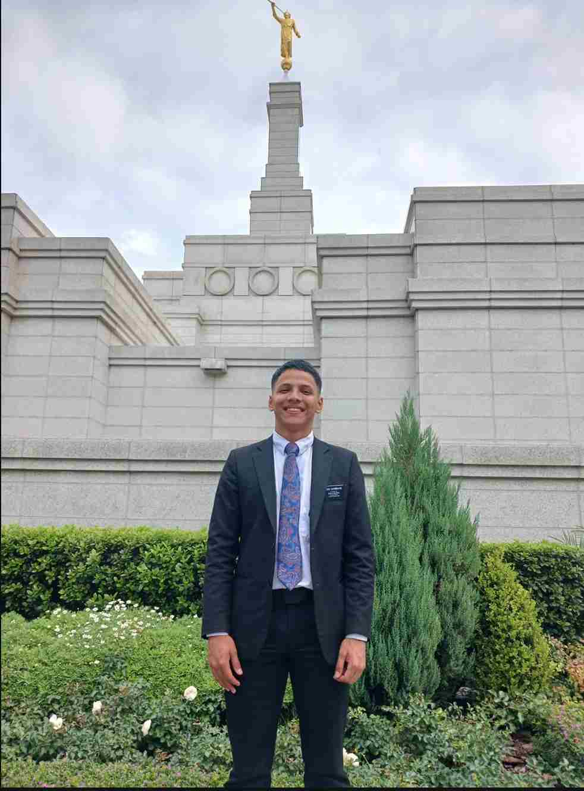

Christopher Zambrano | WDD 130
Hello! My name is Christopher Zambrano. I am a student at BYU Idaho - Online. I am currently studying Software Development. I am a member of the Church of Jesus Christ of Latter-Day Saints. I am a husband. I am a hard worker and always look for ways to improve myself. I am excited to learn more about web development and see where this journey takes me.